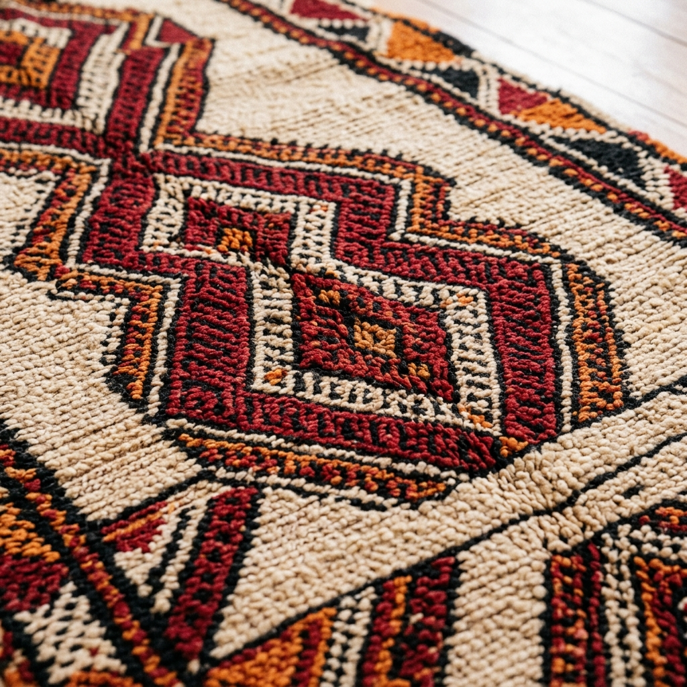

L'Art du Tissage et des Saveurs
Le restaurant Coin Margoum est né d'une passion partagée pour les recettes familiales de la cuisine traditionnelle tunisienne et pour l'art de l'hospitalité chaleureuse.
Notre nom rend hommage au Margoum, un tapis traditionnel de laine cardée, tissé à la main, dont les formes géométriques en losange ornent nos murs et nos banquettes. Tout comme la tisserande croise les fils pour former des motifs complexes, notre chef croise et associe les épices pour révéler la richesse aromatique du couscous tunisien, de l'ojja, ou du fameux riz djerbien cuit lentement à la vapeur.
Nous vous accueillons en famille ou entre amis à La Marsa, pour un moment de partage simple et gourmand dans une ambiance lumineuse et authentique.
Contact & Accès
Notre Adresse
11 Rue Mongi Slim, La Marsa 2076, Tunisie
Quartier chaleureux et facile d'accès.
Horaires d'Ouverture
Mardi au Dimanche : 12h00 - 23h00
Lundi : Fermé (Repos hebdomadaire)